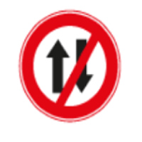
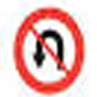
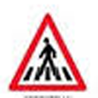
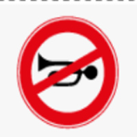
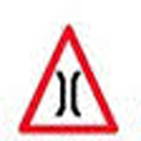
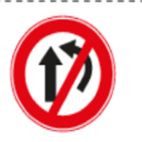
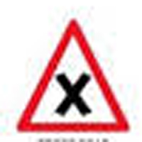
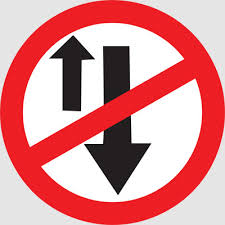
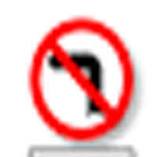
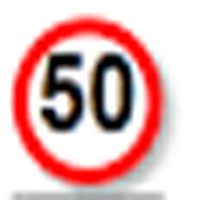

1.
Stop
2.
Compulsurry turn left
3.
give away
4.
One way
5.
U-turn prohibited
6.
Pedestrian crossing
7.

parking on the right allowed
8.

Right turn prohibited
9.
Horn prohibited
10.
Nerrow bridge ahed
11.
 Hospital
Hospital
Hospital
12.
 First aid post
First aid post
First aid post
13.
 Resting place
Resting place
Resting place
14.
 end of speed registration
end of speed registration
end of speed registration
15.
 Nerrow road ahead
Nerrow road ahead
Nerrow road ahead
16.
 Level crossing unguarded
Level crossing unguarded
Level crossing unguarded
17.

Overtaking prohibited
18.

Cross road
19.
 No entry
No entry
No entry
20.
 Side road left
Side road left
Side road left
21.
 Sound horn Compulsurry
Sound horn Compulsurry
Sound horn Compulsurry
22.
 Compulsurry turn right
Compulsurry turn right
Compulsurry turn right
23.
No parking
24.

One-way
25.
 No entry for cars and motor cycles
No entry for cars and motor cycles
No entry for cars and motor cycles
26.
 Trucks prohabited
Trucks prohabited
Trucks prohabited
27.
 Bullock cart prohabited
Bullock cart prohabited
Bullock cart prohabited
28.
 Pedesttians prohabited
Pedesttians prohabited
Pedesttians prohabited
29.

Left turn prohibited
30.

Drive the vichle not exceding 50km/hr.
31.

32.
33.
34.
35.
36.
37.
38.
39.
40.
41.
42.
43.
44.
45.
46.
47.
48.
49.
50.
51.
52.
53.
54.
55.
56.
57.
58.
59.
60.
61.
62.
63.
64.
65.
66.
67.
68.
69.
70.
71.
72.
73.
74.
75.
76.
77.
78.
79.